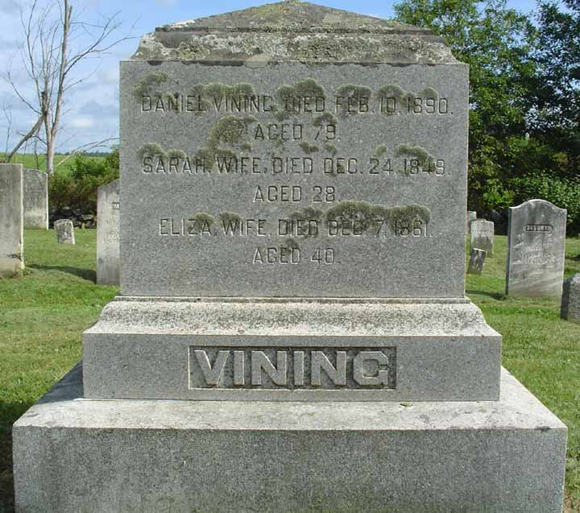
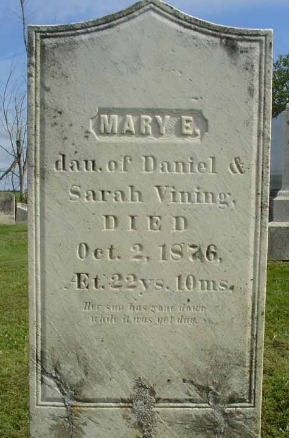
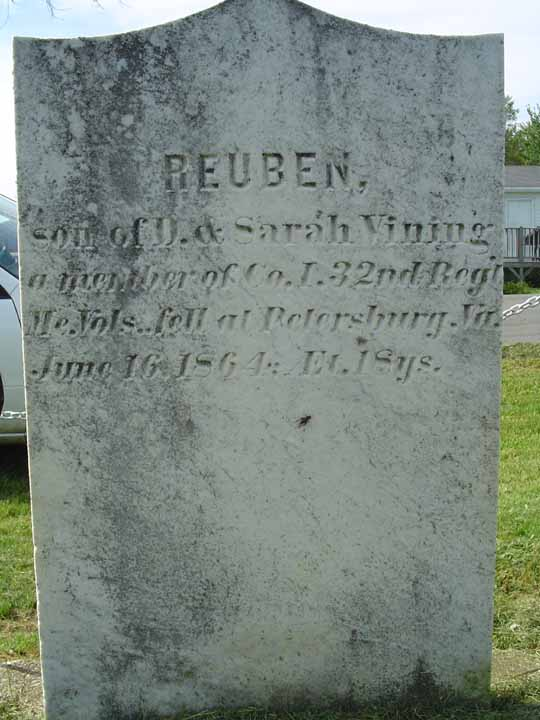

Census Data
| 1840 | 1850 | 1860 | 1870 | 1880 | 1890 | |
| Daniel Vining | ? | 39 | 50 | 58 | 68 | dead |
| Sarah (Esterbrook) Vining | ? | dead | ||||
| Eliza (Choate) Vining | 39 | dead | ||||
| Sarah A. Vining | ? | 13 | not living in this household | |||
| Angeline Vining | ? | 11 | not living in this household | |||
| Adaline Vining | ? | 19 | not living in this household | |||
| Marcellus Vining | 9 | 18 | dead | |||
| Eleanor M. Vining | 7 | 16 | 20 | dead | ||
| Reuben Vining | 3 | 14 | dead | |||
| Daniel Vining Jr. | 1 | 10 | 20 | 32 | ? | |
| Marcia/Marsha Vining | 7 | 17 | living in separate household | |||
| Mary/May E. Vining | 6 | 15 | dead | |||
| Alfreda Vining | 3 | [10?] | 24 | ? | ||
| Julia A. Vining | 2 | 12 | 22 | ? | ||
| Minerva "Minnie" Vining | 5 months | 10 | 20 | ? | ||
| Alice L. Vining | 8 | 18 | ? |


Death Data
Cemetery lot of Daniel Vining's family. The large headstone in back belongs to Daniel Vining and his wives Sarah and Eliza, and the smaller stones in front, from left to right, belong to daughters Mary E. Vining and El[ea]nor [sic] M. Vining, and to sons Marcellus Vining and, on the back of Marcellus's stone, Reuben Vining. Following the image of the cemetery lot are images of the individual gravestones. These stones are in the Windsor Neck Cemetery in Windsor, Maine.

